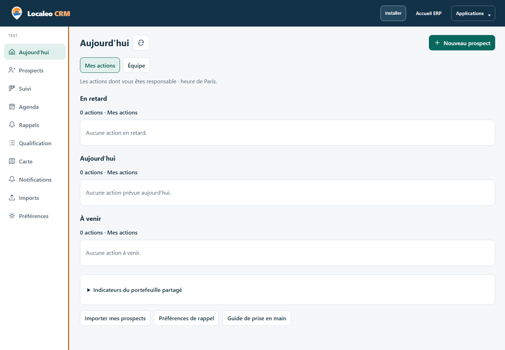
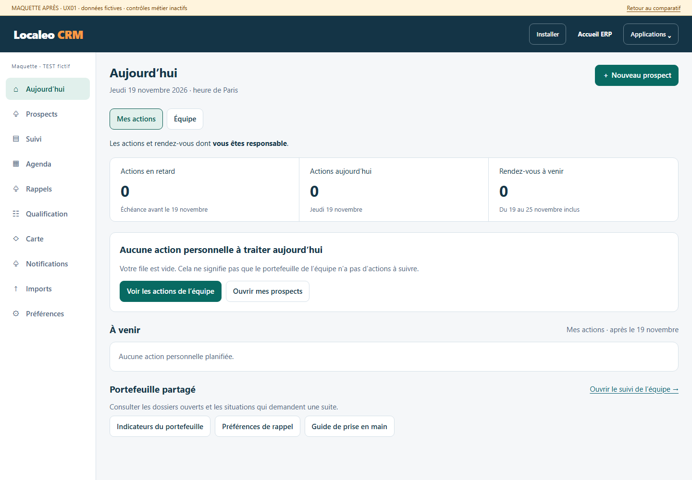
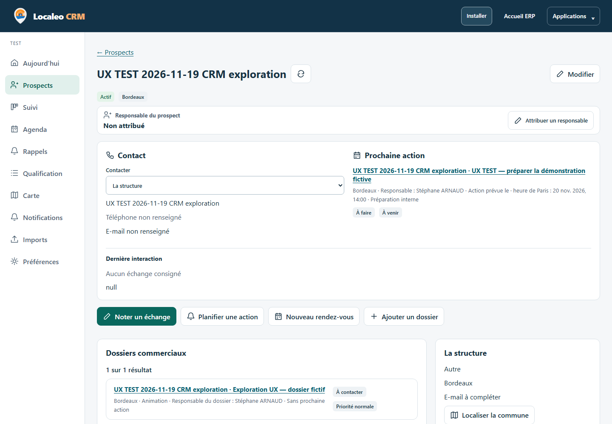
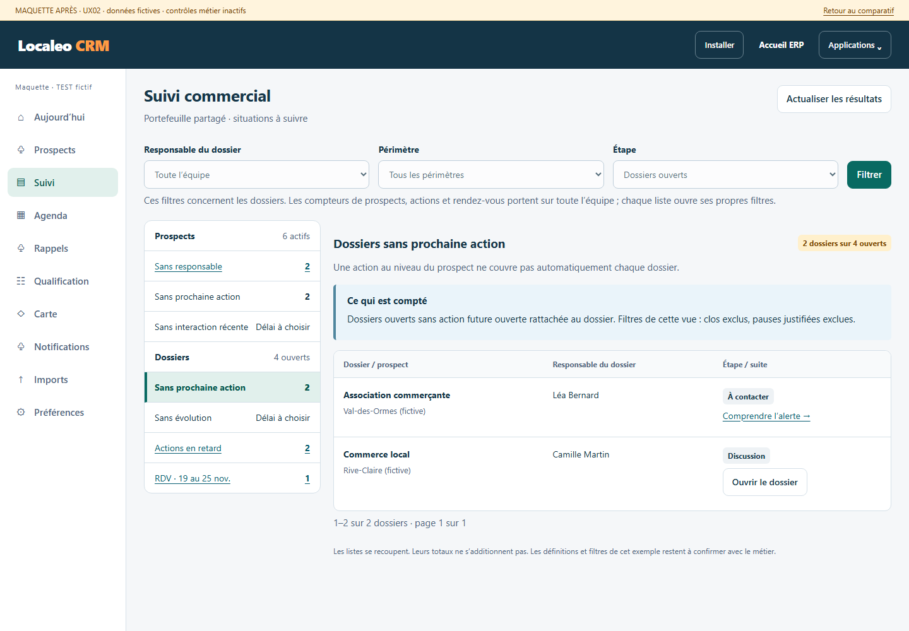
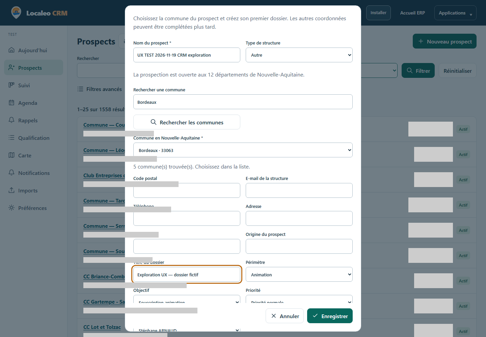
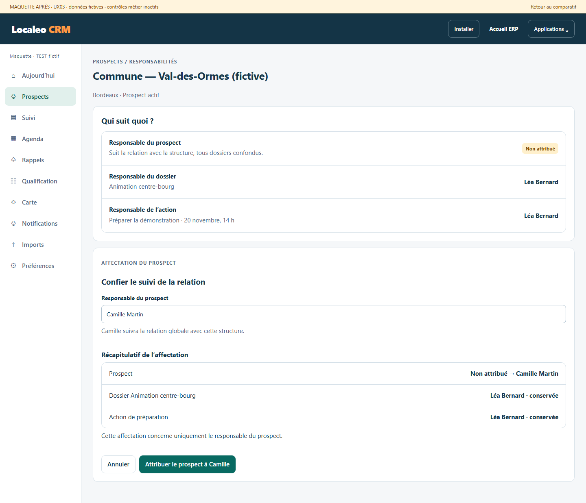
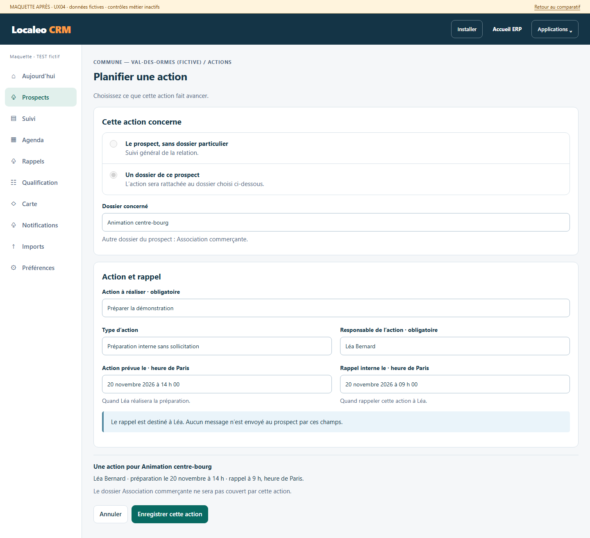
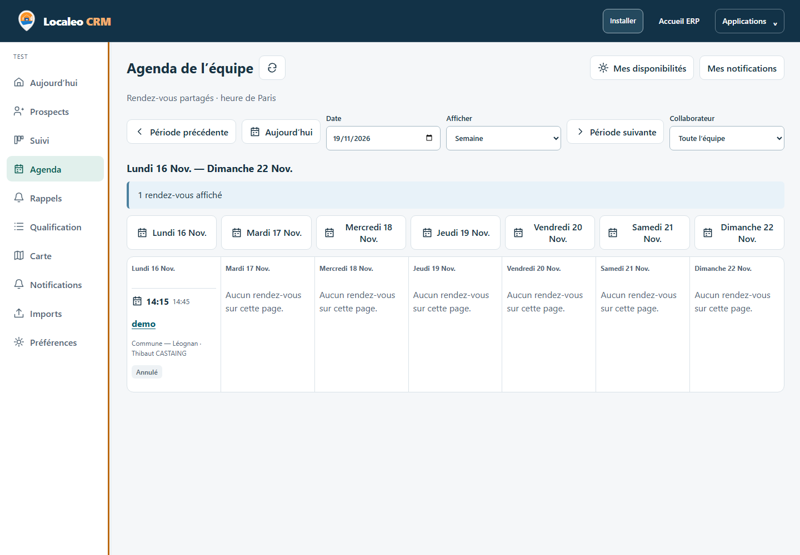
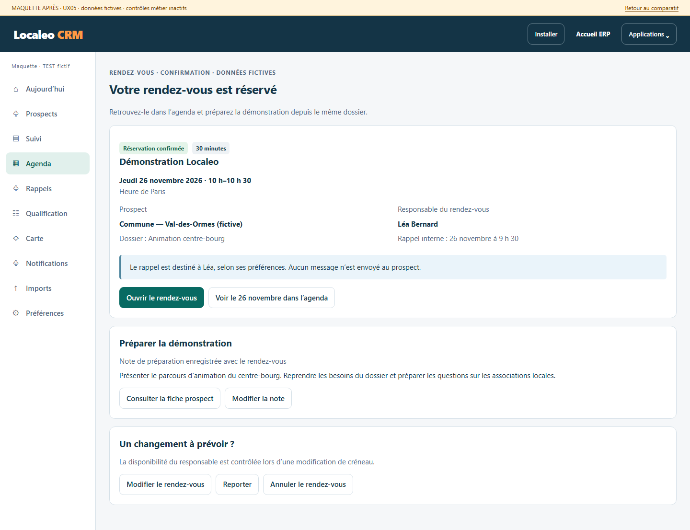

Étape 3 · propositions visuelles
Des priorités plus visibles.
Des responsabilités explicites.
Cinq orientations P1 adoptées. Des maquettes isolées, sans modification de l’application.
Sur mobile, la capture AVANT reste celle du bureau : aucune capture mobile exploitable du CRM n’existe dans l’audit. Le rendu APRÈS mobile est une proposition, pas une recette du produit.
UX01 · P1 · effort M
Accueil et portée
Parcours : Accueil, priorités et suivi collectif
Constat ou limite : Aujourd’hui, portée Mes actions : trois files vides ; les indicateurs partagés sont repliés en bas. Le volume collectif n’est pas visible dans cette capture.
O01–O02, O16 · Orientation et critères · Vote détaillé




Distinguer son activité de celle de l’équipe et ouvrir les priorités utiles.
Toutes les scènes de UX01


UX02 · P1 · effort L
Situations à suivre
Parcours : Pilotage global, pipeline et listes filtrées
Constat ou limite : Fiche de test : une prochaine action est affichée en haut, mais le dossier en bas reste sans prochaine action. Cela illustre la distinction des unités ; cette capture ne prouve pas l’absence d’une liste globale.
O09, O16 ; couverture du pilotage · Orientation et critères · Vote détaillé




Retrouver les éléments à suivre sans additionner des catégories qui se recoupent.
Toutes les scènes de UX02


UX03 · P1 · effort S
Responsabilités explicites
Parcours : Création, fiche prospect et affectation
Constat ou limite : Création d’un prospect avec premier dossier. Le champ Responsable est en fin de formulaire ; la fiche obtenue laisse le prospect non attribué. La confusion est une hypothèse, pas une erreur métier démontrée.
O04–O05, O17 · Orientation et critères · Vote détaillé





Comprendre qui suit la relation, qui porte le dossier et qui réalise l’action.
Toutes les scènes de UX03


UX04 · P1 · effort M
Prochaine action rattachée
Parcours : Tâches, relances et suivi de dossier
Constat ou limite : La zone Prochaine action concerne le prospect ; l’alerte Sans prochaine action reste visible dans la ligne du dossier. Aucun rattachement de tâche n’a été perdu.
O08–O09 · Orientation et critères · Vote détaillé



Savoir quel dossier avance et pourquoi une autre alerte reste active.
Toutes les scènes de UX04


UX05 · P1 · effort M
Du rendez-vous à sa suite
Parcours : Réservation, agenda, préparation et compte rendu
Constat ou limite : Agenda de la semaine du 16 au 22 novembre : un RDV annulé préexistant est affiché. Le nouveau RDV réservé pour le 26 novembre n’a pas été retrouvé pendant la recette interrompue. Aucune disparition n’est démontrée.
O11–O12 ; limites de recette · Orientation et critères · Vote détaillé





Retrouver le bon rendez-vous, son contexte et sa prochaine étape.